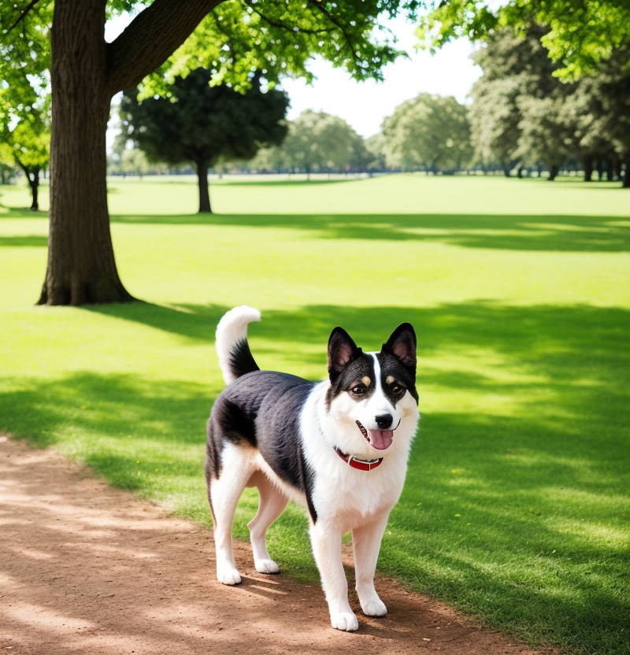

|  |
Hoy en día se conocen alrededor de 800 razas distintas de perros, con tamaños y fisonomías muy diferentes, creadas, a partir, de la selección artificial por parte de los seres humanos. Tienen muy buen oído y el sentido del olfato muy desarrollado, siendo una herramienta que define sus mejores cualidades como cazador o rastreador, pero también su capacidad de socialización reconociendo olores familiares.
Recientemente se realizó en Finlandia un estudio para calcular la inteligencia de diversas razas de perros, de acuerdo a diversos parámetros como la memoria o la sociabilidad. Se obtuvieron resultados interesantes: los perros recordaban qué humanos les habían engañado y les ignoraban, mostrando enfado o indiferencia; en cambio, eran cariñosos con las personas que les habían “dicho la verdad”. Una de ellas, el hovawart, una raza de perro guardián originaria de la Selva Negra, demostró ser capaz de detectar cuando le estaban engañando indicándole un recipiente vacío, demostrando que confiaba en su propia percepción incluso si esta entraba en contradicción con las indicaciones de los humanos. Los perros no solo son perspicaces a la hora de saber si se les engaña: también han demostrado ser capaces de entender cuando alguien es desagradable con su familia humana, y de comportarse en consecuencia.